How to Analyze an Article
- Find a News URL: Copy the full link (address) of any news article you want to check.
- Paste & Analyze: Navigate to the 'Analyse' page, paste the link into the input box, and hit the 'Analyse' button.
- Wait for Deconstruction: InfoLens will break the article down sentence-by-sentence to look for linguistic patterns.
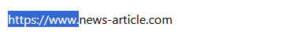
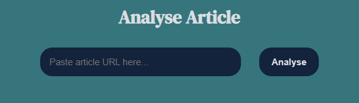
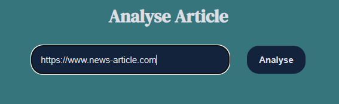
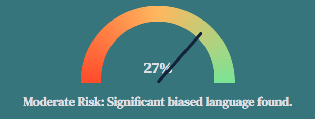
Note: InfoLens shows you the patterns, but the final verdict belongs to you.
Understanding the credibility gauge
The needle represents the overall credibility of the article
- Low Risk: Green (0-25%) The language is factual and objective.
- Moderate Risk: Yellow/Orange (26-75%) Contains some opinionated phrasing or heavy adjective use.
- High Risk: Red (75%+) Strong signals of sensationalist or emotionally manipulative language.
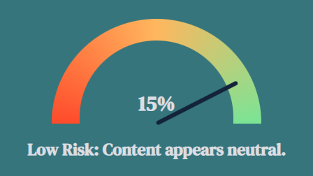
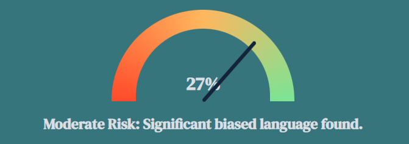
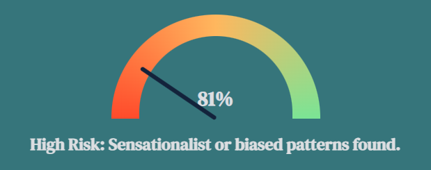
Understanding the scores
InfoLens uses two primary markers to determine the credibility score:
Subjectivity: High subjectivity means the author is using personal opinions rather than verified facts.
Adjective density: Sensationalist news often over describes events with emotional adjectives to trigger a reaction, this means news articles that use too many adjectives are not credible.
Credibility score: These two markers are added together and averaged to get the credibility score.
Verdict label: Based on the final percentage, InfoLens assigns a verdict label to describe the overall tone of the sentence.
| Risk Score | Verdict Label | Linguistic Meaning |
|---|---|---|
| 0 - 25% | Neutral | The writing is objective and factual. |
| 26 - 59% | Balanced | A mix of facts and minor descriptive or opinionated phrasing. |
| 60 - 74% | Opinionated | The language leans heavily toward a specific perspective. |
| 75% + | Highly Subjective | Strong presence of emotional bias and sensationalist patterns. |
Analyse Article
InfoLens is deconstructing the article...
{{ analysisResult.verdict }}
Overall Breakdown
Title: {{ analysisResult.title }}
Source: {{ analysisResult.publisher }}
This article from {{ analysisResult.publisher }} shows a {{ analysisResult.risk_gauge }}% match with sensationalist patterns.
Sentence-by-Sentence Breakdown
{{ item.text }} {{ item.details }}
About InfoLens
InfoLens is a platform designed to promote informed and responsible digital news consumption by helping users understand how online information is presented.
InfoLens utilizes Natural Language Processing (NLP) via Python to deconstruct news articles into factors such as emotion, structural bias, and source reliability.
By doing this, InfoLens encourages useres to understand how news is presented and supports critical thinking.
Why InfoLens exists
The increased availability of online news has made it difficult for users to assess the credibility of digital content.
Misleading articles often rely on emotional language and sensational headlines, which can influence readers without providing reliable information.
Therefore, there is a need for a platform that helps individuals understand how news is presented, supports critical thinking, and enables more informed decisions before trusting or sharing online information.
That is where InfoLens comes in!
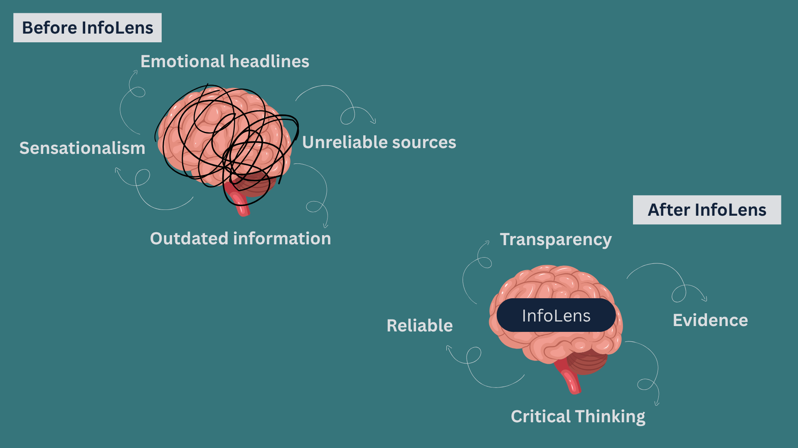
How InfoLens works
InfoLens is an innovative news verification framework designed to bridge the transparency gap.
Unlike traditional fact-checkers that provide just true or false verdicts, InfoLens introduces an explainability layer with the help of explainable AI (XAI) that makes the provided score understandable to users.
InfoLens allows users to submit links to news articles for analysis, which the platform then examines. It deconstructs news articles into distinct linguistic vectors like the tone of the language, emotional wording, and structural features commonly associated with misleading or credible content.
By converting these scores into visual indicators like the credibility gauge, it shifts the focus from “what to think" to "how to evaluate", empowering users to use their critical thinking skills needed for the digital age.
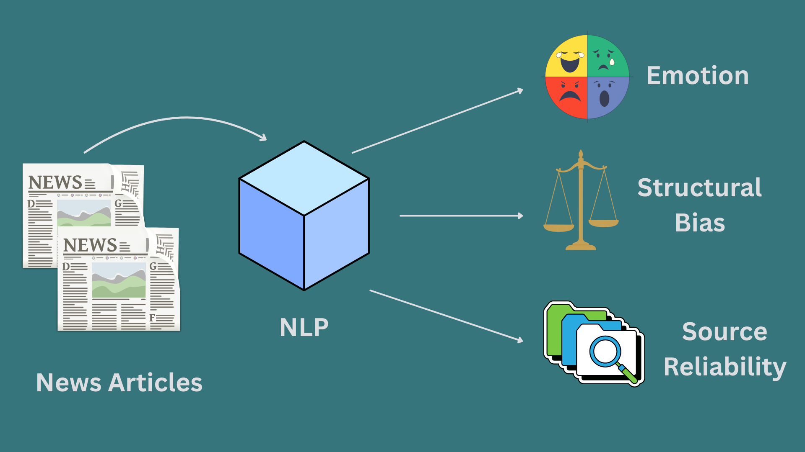
Ethical approach
Most tools tell you what to think with a binary true or false label, however this approach limits critical thinking.
InfoLens does not determine whether the news is true or false, instead it promotes critical thinking by providing transparent explanations that allows users to form their own informed judgments.
InfoLens shows you the evidence, which is the specific sentences and markers that triggered the analysis scores, so that the final judgment remains with you.
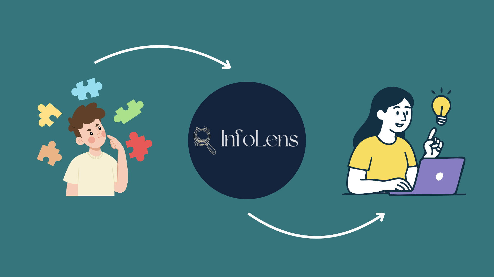
Intended users
InfoLens is designed for students, researchers, and everyday readers who want to improve media literacy and engage more critically with digital news.
For students, it is a research assistant that validates sources for academic purposes.
For researchers, it could be used as a tool to track patterns in misinformation.
For an everyday consumer, it acts as protection against misinformation.
The goal of InfoLens is to create a global community of critical thinkers who value evidence over emotion.
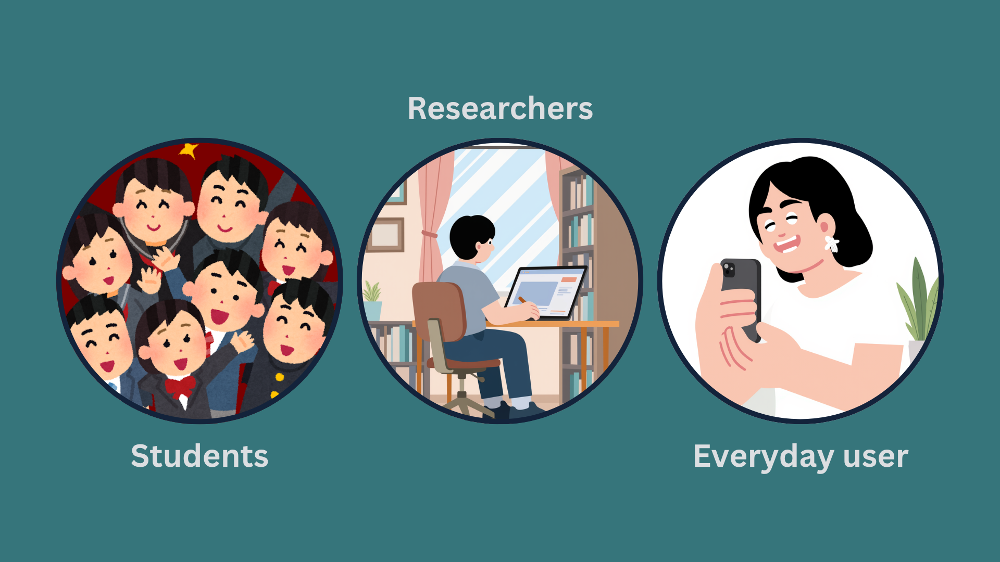
Vision and Impact
Current digital literacy is struggling to keep pace with the speed of social media. Sensationalised headlines are more likely to be shared than factual ones, contributing to social polarization.
Here is the impact InfoLens could make:
- Societal: Restores trust in verified journalism by making the verification process human-readable and understandable.
- Educational: Acts as a tool for students and professionals to recognize linguistic red flags.
By aligning with UN Sustainable Development Goal 16 (Peace, Justice, and Strong Institutions), InfoLens seeks to restore trust in journalism, providing an accessible tool for educational and media organizations to promote critical thinking and responsible information consumption in the digital age.